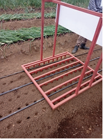
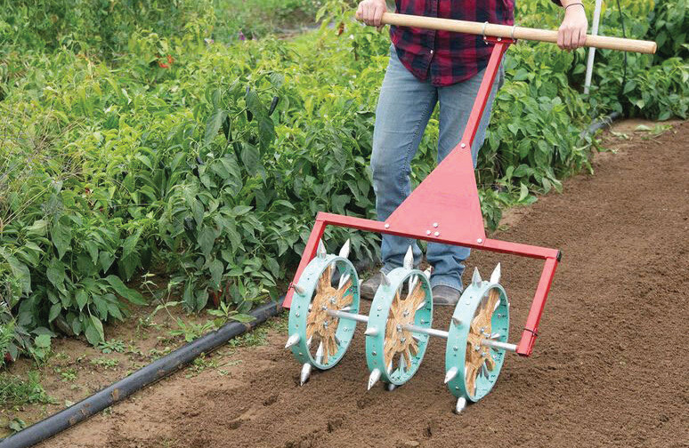
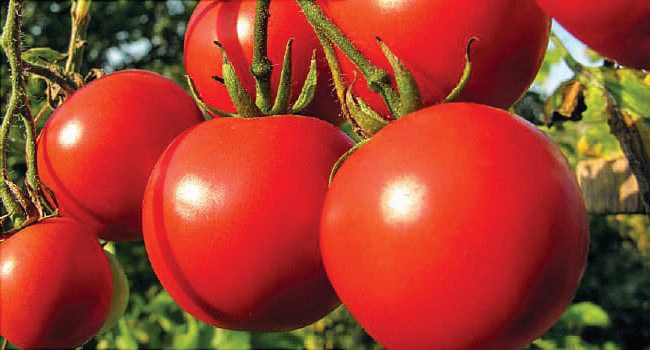

Figure 7.2: Examples of transplanting dibblers
Managing water for onions
Onions need to be watered regularly. They need more water as they grow and less as they get older. The watering should stop 10 – 15 days before you plan to harvest the onions. There are different ways to water onions, including furrow irrigation and modern methods such as drip irrigation.
Managing nutrients for onions
In addition to organic manure incorporated during land preparation, inorganic fertiliser is also needed. You need to add 180 kg of Nitrogen per hectare at different times; 60 kg before planting, 60 kg at the leaf stage, and 60 kg at the 4th week. Too much nitrogen can be bad. If you add too much nitrogen at late times, the onion leaves will grow too quickly affecting the onion from forming bulbs properly. Likewise, apply 170 kg of potassium per hectare. Before transplanting, add 110 kg of potassium then 60 kg of potassium 7 - 8 weeks before you harvest. Your teacher and a local agricultural extension worker can assist you in determining the recommended type and amount of fertilisers.
Managing weed pests in onion fields
Onion plants cannot compete with weeds for space, water, and nutrients. Use a special type of herbicide to kill perennial weeds before you start preparing the land or before planting. Use another type of herbicide immediately after transplanting. It is not recommended to use a hand hoe at this stage as it can hurt the onions. If possible, cover the soil with mulch. This can stop weeds from growing. You can use leaves or straw for mulching. Combine different methods to control weeds. Don’t rely on just one method. You can ask local crop extension workers or agricultural input suppliers for advice. They can advise you on the best method to use. Keeping the field free from weeds is important for growing healthy onion plants.
